SOCKS is an Internet protocol that exchanges network packets between a client and server through a proxy server. A SOCKS5 proxy is an alternative to a VPN. It routes packets between a server and a client using a proxy server. This means that your real IP address is hidden and you access the internet with an address provided to you by a proxy provider.
Requirments:
1. Putty installed on your computer
2. AWS account - free tier / learner lab
Step -1 : Launch Linux instance
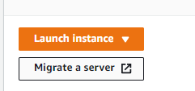
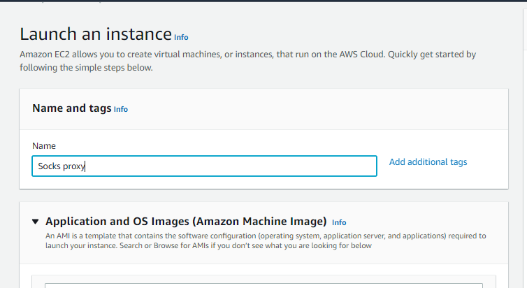
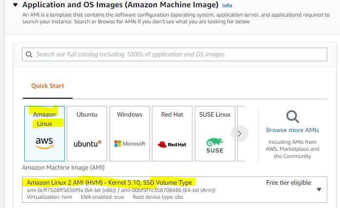
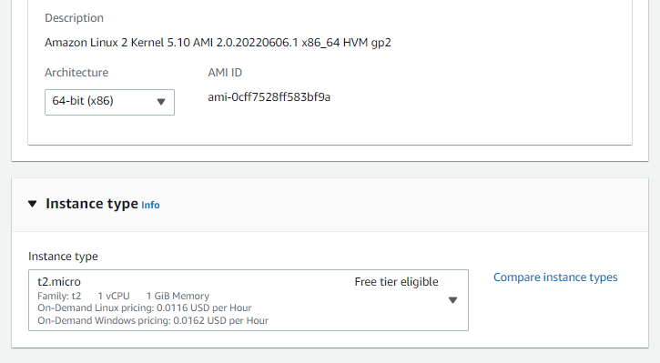
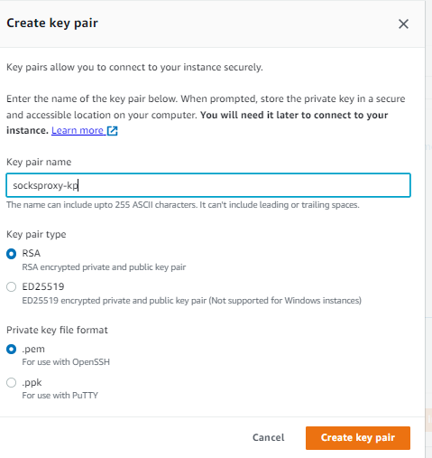
Step-2 convert key pair file ( .pem) to (.ppk) file using puttygen
Step-3: open putty :
Hostname : put public ip of ec2 instance
port 22 save the settings
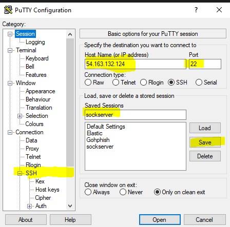
click on SSH and click on Tunnels, souce port can be any port : 9999 which is not used by your machine, Destionation is the IP address of ec2 instance and then click Add
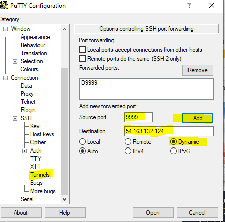
Now click on Auth to load your private key (.ppk) in putty.
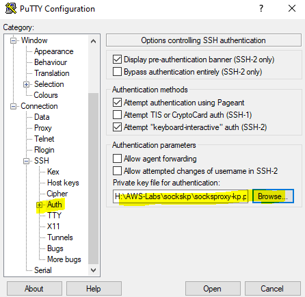
now go back to session and save and load the session and then click on open
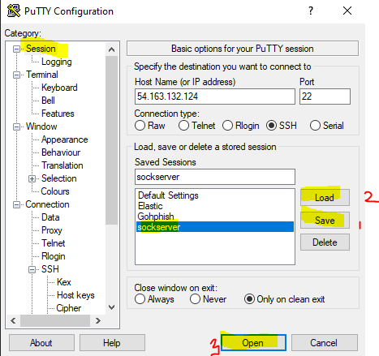
Now it will login to the remote machine.
login : ec2-user
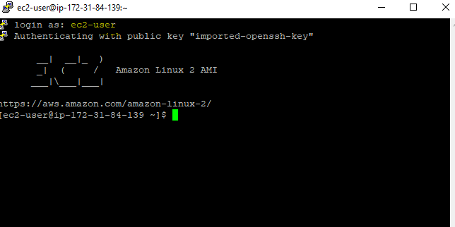
Step-4 Now check your host machine ip address ( note down ip)
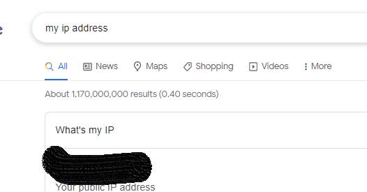
step-5 Modify your browser settings to mannual proxy and add local host and port 9999 in the socks proxy
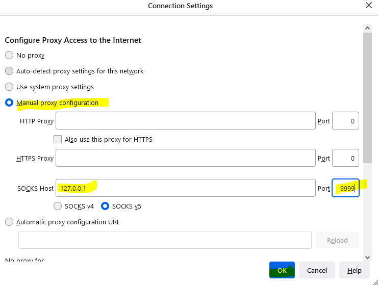
Once you have done . open your browser and check your IP.
Hurry !, we are now connected to through amazon network.
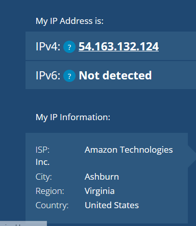